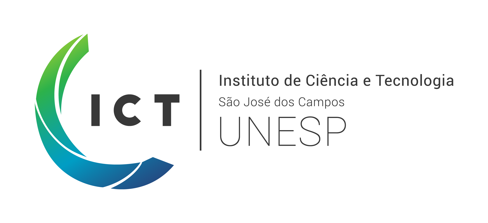

Desenvolvimento de medidas para caracterização de mudanças em séries temporais de imagens SAR com apoio de Aprendizado de Máquina
Dep. de Engenharia Ambiental - ICT-Unesp
import ee
coordenadas = "-48.534679,-22.508117,-48.50481,-22.538879"
x1, y1, x2, y2 = coordenadas.split(",")
datas = "2020-01-01,2020-12-31"
inicio, fim = datas.split(",")
escala = 30
dummy_value = 99999
geom = ee.Geometry.Polygon([[[float(x1),float(y2)],
[float(x2),float(y2)],
[float(x2),float(y1)],
[float(x1),float(y1)],
[float(x1),float(y2)]]])
sentinel1 = ee.ImageCollection('COPERNICUS/S1_GRD')\
.filterBounds(geom)\
.filterDate(inicio,fim)\
.filter(ee.Filter.listContains('transmitterReceiverPolarisation', 'VV'))\
.filter(ee.Filter.listContains('transmitterReceiverPolarisation', 'VH'))\
.filter(ee.Filter.eq('instrumentMode', 'IW'))
v_emit_asc = sentinel1.filter(ee.Filter.eq('orbitProperties_pass', 'ASCENDING'))
v_emit_desc = sentinel1.filter(ee.Filter.eq('orbitProperties_pass', 'DESCENDING'))
image = ee.Image(dummy_value).blend(v_emit_desc.map(pkg.add_amplitude).select('amplitude').toBands())
image_names = image.bandNames().getInfo()DataFrame em formato long das bandas da imagem\[ Amplitude = \sqrt{VV^2 + VH^2} \]
def add_amplitude(image, VV = "VV", VH = "VH"):
amplitude = image\
.expression('(VV ** 2 + VH ** 2) ** (1 / 2)', {'VV':image.select(VV), 'VH':image.select(VH)})\
.rename('amplitude')
return image.addBands(amplitude)DataFramedef ee_to_pandas(imagem, geometria, bandas, scale):
imagem = imagem.addBands(ee.Image.pixelLonLat())
coordenadas = imagem.select(["longitude","latitude"] + bandas)\
.reduceRegion(reducer=ee.Reducer.toList(),
geometry=geometria,
scale=scale,
bestEffort=True)
coordenadas = coordenadas.getInfo()
return pd.DataFrame.from_dict(coordenadas).tif representando a série temporal de imagens, a técnica de envelope espectral pode ser aplicada pixel à pixel por meio da biblioteca RPy2, extraindo a função specenv do pacote {astsa} para R (Shumway e Stoffer 2000)# com RPy2, função de specenv para Python
rpy2.robjects.numpy2ri.activate()
pandas2ri.activate()
astsa = importr('astsa')
base = importr('base')
stats = importr('stats')
def optimize(x, *args):
if type(x) == pd.core.series.Series:
x = np.array(x)
arr = list(x.flatten())
arrays = [arr] + [list(i(arr)) for i in args]
mat = np.array(arrays).T
spec_env = astsa.specenv(mat, real=True, plot=False)
beta = spec_env[spec_env[:,1]==max(spec_env[:,1]), 2:].ravel()
opt = lambda l: np.array([l] + [list(k(l)) for k in args]).T * beta
return pd.Series(opt(arr).sum(axis=1)) 
Projeto Temático FAPESP